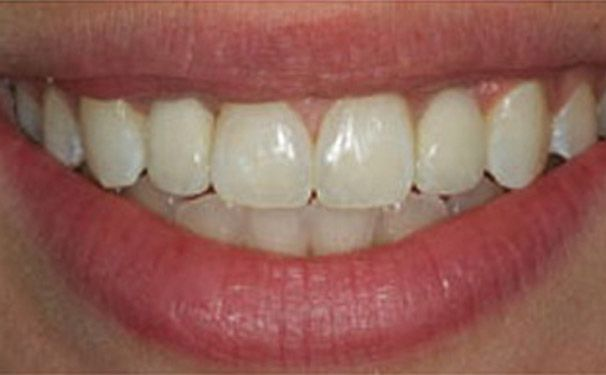
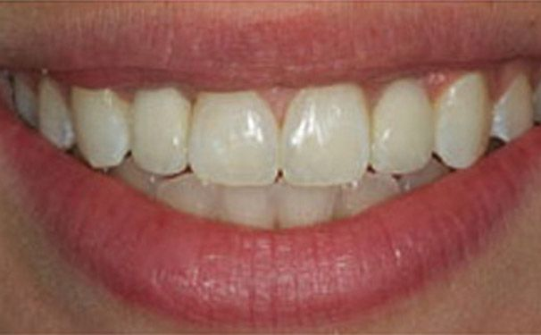

Antlara Ağız ve Diş Sağlığı Polikliniği
İmplant nedir? İmplant uygulaması nasıl yapılır?
Faydaları ve zararları nedir?
Antalya İmplant fiyatları ne kadardır?
İmplant Nedir?
İmplant, ağzımızdan herhangi bir sebeple eksilmiş olan diş veya dişlerin ağız ve çene estetiğini yeniden kazandırmak ve eksik dişlerin yeniden tamamlanması amacıyla, çene kemiğine çoğunlukla vida şeklinde yerleştirilen yapay diş kökü olarak tanımlanabilir.
Detaylı Bilgi İletişim 

Dental İmplant SSS
İmplant Tedavisi - Antalya
Diş implant uygulaması çoğunlukla iki aşama olarak yapılır. Birinci aşamada eksik dişin olduğu bölgeye lokal anestezi ile uyuşturularak diş eti kaldırılması uygulanır. Daha önceden ölçümleri yapılarak belirlenen kemik kalınlığı ve uzunluğu dikkate alınarak implant için diş kemiğinde yer hazırlanır. İkinci aşamada ise diş kemiğine yerleştirilen kök baz alınarak üzerine diş vidalama işlemi yapılır.
İmplant uygulamasının birinci aşaması gerekli muayenenin yapılması ve kemik içine implant vidasının yerleştirilmesi sürecidir. Bu süreçten sonra üzerine yapılacak protezin süresi kişinin yaşı, çene kemiğinin kalitesi gibi özelliklere göre 2-6 ay arasında değişebilir. Bu süre diş hekiminin yapacağı muayene sonrası size bildirilecektir.
İmplant uygulaması sonrasında eklenen protez kişinin kendi dişlerinden pek farklı değildir. Bu sebeple diş eti hastalıkları diş iltihaplanması gibi süreçlerden etkilenebilirler. Gerekli diş hekimi kontrolleri ve iyi bir ağız bakımı yapılması ile imlant protezleri uzun süre sağlıklı bir şekilde kullanabilirsiniz.
İmplant uygulaması için kullanılan titanyum bütün dünyada en çok kullanılan ve kabul görmüş olan implant maddesidir. Vücuda çabuk uyum sağlaması ve kolay kolay vücut tarafından reddedilme olmadığından diş hekimleri tarafından kullanılmaktadır. Antalya - İmplant çene kemiğine yerleştirilen bir vida olması sebebiyle vücut tarafından reddedilme gibi bir durum söz konusu değildir. Fakat implant sonrası gerekli ağız bakımının yapılmaması, hijyen kurallarına uyulmaması sonucu hastalarda enfeksiyon kapma riski olabilir. Buna bağlı olarak uygulanan implantın ömrünü erken tamamlaması sonucu ortaya çıkabilir. Bu sebeple implant uygulanmasından sonra diş hekimi kontrolleri ve ağız bakımı kesinlikle aksatılmamalıdır.
Kişinin genel sağlık durumu iyi olduğu müddetçe implant uygulaması için yaş önemli değildir. Fakat implant uygulaması yapılacak kişinin çene kemik yapısı tamamlanmamışsa implant uygulaması tercih edilmeyebilir.
İmplant uygulamaları kişinin şeker hastalığı, yüksek tansiyon gibi hastalıkları bulunmuyorsa herkese uygulanabilir. Fakat implant uygulanabilmesi için gerekli bazı şartların sağlanması gerekir. Bunlar implant uygulama öncesinde yapılacak muayenede veya doktor görüşmesinde kontrol edilir. İmplant öncesi muayenelerde olması gereken şartlardan birisi kişinin çene kemiğinin ölçümleridir. Çene kemiği implant vidasını yerleştirmeye yetecek kadar geniş ve derin olmalıdır. Aksi halde implant vidası tutunamaz ve implant uygulaması başarısız olur. Ayrıca çene kemiğinin yeterli sertlikte olması üzerine yapılacak protezin kalitesini de belirler.
İmplant uygulaması iki aşamada gerçekleştirilir. Birinci aşamada lokal anestezi doğru uygulanırsa uygulama esnasında ağrı olmaz. İmplantın çene kemiğine yerleştirildiği günün akşamında hafif bir sızı duyulabilir. Bu hafif sızı ise ağrı kesiciler tarafından kolayca bastırılır. Duyulacak ağrı normal diş çekiminde duyulan ağrıdan çok farklı değildir. Zamanla ağız implanta alışacağından ağzınızda varlığını bile hissetmeyeceksinizdir. Antalya implant hakkında her türlü sorununuz için canlı yardım üzerinden talepte bulunabilirsiniz. Detaylı bilgi için linkine veya linkine tıklayarak ulaşabilirsiniz.
Diyabet ve Şeker Hastalarında;
Diyabeti olan hastalara kesinlikle implant uygulanmaz diye bir şey söylenemez. Diyabet hastalarında implant yapılması için hastalığın seviyesinin kontrol altında olması gerekmektedir. Diyabet hastaları gerek doku iyileşmesinin yavaş olması gerekse enfeksiyon riskinin fazla olması nedeniyle riskli olarak kabul edilen hastalardandır. İmplant uygulanabilen diyabet hastalarının tedavi sonrası diş hekimi kontrollerini aksatmaması ve tedavi sonrası ağız bakımı için yapılması gereken hijyen kurallarına çok dikkat etmesi gerekmektedir.
Yüksek tansiyon hastaları ise ağrı veya stres gibi durumlara tepkisel olarak daha hassas olduğundan implant tedavisi esnasında kan basıncı yükselerek sıkıntılı sorunlara yol açabilir. Bu sebeple implant uygulama esnasında tansiyon hastası olan kişilerin kan basınçları takip edilmelidir.
Kemik Gelişimini Tamamlanmamış Olanlarda;
Erken yaşlarda insanın kemik gelişimi tam olarak tamamlanmaz. İmplant uygulaması yapılacak çene kemiğinin gelişimini tamamlaması sonucu yapılacak implantı tutacak kemikte problem yaşanabilir. Bu sebeple bu tür hastalarda implant yapmak için uygun zamanın gelmesi beklenir.
Çene Kemiğinin Uygun Olmadığı Durumlar;
İmplant uygulamalarında implantın yerleştirileceği çene kemiğinin niceliği çok önemlidir. İmplant için kullanılan titanyum implantlar genellikle belirli çap ve uzunlukta üretilirler. Çene kemiğinin durumuna göre diş hekimi implant ölçülerine karar vermektedir. Bazı durumlarda kişinin çene kemiği implant uygulaması yapılmasına müsaade etmeyecek şekilde çok ince veya yeter uzunlukta olmayabilir. Bu gibi durumlarda hasta ile konuşularak diş hekiminin cerrahi müdahale ile çene kemiğini uygun hale getirmesi kararı verilebilir. Bunun için kullanılacak yöntemler kısaca kemik greftleme, kemik açma olarak adlandırılır. Ağız ve Çene hakkında detaylı bilgi için linke tıklayabilirsiniz.
Bu durumların dışında kalp hastalığı olan veya kalp pili kullanan hastalarda, kemoterapi gören hastalarda da implant uygulaması diş hekiminin yapacağı muayene ve diş hekimi ile hastanın beraber karar vermesi sonucunda yapılabilir. İmplant uygulaması yapılırsa hastaların tedavi sonrası ağız bakımı ve hijyen kuralları ile diş hekimi kontrollerini çok iyi takip etmesi gerekmektedir.
Kan pıhtılaşması Sorunu Olanlarda;
Kan pıhtılaşma rahatsızlığı olan hastalarda implant uygulaması oldukça riskli olduğundan genellikle uygulanmaz.
1. İmplant sonrası Ağız Bakımı nasıl olmalıdır?
İmplant uygulamasından sonra ilk iki gün çok önemlidir. Bu süre içerisinde ağız bakımına çok önem verilmeli, ağızda basınca sebep olacak hareketlerden kaçınılmalıdır. Mümkünse ilk bir gün içinde ağız çalkalanmamalı veya gargara yapılmamalıdır. Ağız içi temizliği fırça veya diş ipi ile yapılmalı fakat implant bölgesine hassas yaklaşılmalı çok basınç uygulanmamalıdır. Nemli bir pamuk yardımıyla implant bölgelerinin temizliği yapılabilir.
2. İmplant uygulaması sonrası beslenme nasıl olmalıdır?
İmplant uygulamasında çeneye vida yerleştirildikten sonra protezin takılacağı 2-6 aylık döneme kadar beslenme konusuna dikkat etmek gerekir. Aşırı sıcak veya soğuk gıdalardan uzak durmalı, çok sert olan besinler yenilmemeli bunun yerine yumuşak ve ılık gıdalar tercih edilmelidir.
3. İmplant sonrası nelere dikkat edilmelidir?
- İmplantların altları en doğru şekilde diş ipi ile temizlenmelidir. Temizleme esnasında implantın sabitliğine zarar verilmemesine özen gösterilmelidir.
- Ara yüz fırçası implant uygulanan hastaların kullanması gereken önemli bir diş temizlik aracıdır.
- İmplant sonrası ilk 2-3 saat hiç bir şey yenilmemelidir. İlk 24 saat boyunca sıcak soğuk yiyecek ve içeceklerden uzak durmak besin olarak ise özellikle yumuşak gıdaları tercih etmek gerekmektedir.
- İlk 12 saat diş fırçalanma veya gargara yapılmamalıdır. 36 saat sonrasında mümkünse 2 hafta boyunca günde iki defa ağız gargarası yapılmalıdır.
- İlk 24 saat süresince sigara alkol kesinlikle kullanılmamalıdır. İmplant bölgesi enfeksiyon konusunda hassastır. Mümkünse tam iyileşme sağlanana kadar özellikle sigaradan uzak durmakta fayda vardır.
- 1-2 gün boyunca ağzınızın kanaması normaldir. Kanamayı durdurmak veya azaltmak için yumuşak bir steril bez veya nemli bir pamuk yardımıyla fazla basınç uygulamadan implant bölgesini temizleyebilirsiniz.
- Diş hekimi tarafından verilen ağrı kesici veya antibiyotikleri önerilen şekilde kullanmaya özen gösterin. Herhangi bir ters durumda diş hekiminiz ile iletişime geçmelisiniz.
- İlk birkaç gün boyunca ağız ve yüz bölgesinde şişlik olması normaldir. Özellikle göz altı bölgesinde oluşacak şişler için buz tedavisi yapılabilir.
- Beklenmedik durumlarla karşılaşılması durumunda diş hekimi ile irtibata geçmeli ve problemlerinizi sormalısınız.
Hap Bilgi Bölümü
İmplant, ağzımızdan herhangi bir sebeple eksilmiş olan diş veya dişlerin çene kemiğine çoğunlukla vida şeklinde yerleştirilen yapay diş köküdür.
İmplant Uygulamalarının fayda ve zararları ... Detaylı bilgi
İmplant süreci normalde 1-2 hafta olmakla birlikte kişiden kişiye değişiklik gösterebilmektedir.
Antlara Ağız ve Diş Sağlığı Polikliniği ekibi olarak 15 yılı aşkın süre boyunca elde ettiğimiz başarılı diş sağlığı operasyonlarına ait fotoğraflar için lütfen tıklayınız.
Fotoğraf GalerisiSağlıklı
Çene kemiğinin titanyumu çabuk kabul etmesi sebebiyle implantlar genellikle titanyumdan üretilmektedir ve titanyum implantların yoğun doku uyumu vardır.
Yüksek Başarı Oranı
Tek / çoklu diş eksilmesinden tüm dişlere uygulanabilmesi nedeniyle diş hekimliği alanında oldukça yüksek kullanım oranı ve başarı yüzdesine sahiptir.
Tercih Sebebi
Uygulama esnasında diğer dişlere müdahale olmaması ve orjinal diş yapısına yakın olması implantı en çok tercih edilen diş tedavilerinden yapmıştır.
Antlara Dental Diş Kliniğimizde kaliteli doğru hızlı diş tedavileri ile tanışın
Antalya diş hekimi ihtiyacınız olması durumunda; Lara / Antalya'da bulunan tam teşekküllü Antlara Ağız ve Diş Sağlığı Merkezi iletişime geçebilirsiniz.